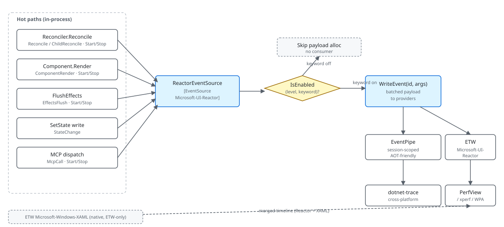

Microsoft.UI.Reactor (Reactor) publishes a structured account of its internal work — every
reconcile pass, every component render, every state write, every MCP
tool call, every effect flush — through one managed
EventSource named Microsoft-UI-Reactor. Consumers can subscribe to
the full firehose or to a subset by keyword (just reconcile events,
just render events, just MCP traffic), and the emission path is
keyword-gated so retail with no consumer attached pays one branch
and zero allocations per event site. The provider flows through both
EventPipe (cross-platform, what dotnet-trace consumes) and classic
ETW (Windows-only, what PerfView and xperf consume). The most common
mistake is reading "EventSource" and assuming it's a Windows-only or
allocation-heavy mechanism; the managed EventSource lives in
System.Diagnostics.Tracing, runs on every .NET platform, and emits
through both pipes simultaneously with no per-event allocation when
no consumer is listening.
Perf Instrumentation¶
This page covers what Reactor publishes, where to read it, and how to get a clean trace. The deeper sampling machinery lives in spec 031 (frame-aligned sampling) — this page links to that for the design rationale and focuses on what the runtime emits today.
The emission pipeline¶

A managed EventSource is a façade over two transports the .NET
runtime maintains in parallel: EventPipe is the in-process, AOT-safe
session that dotnet-trace and PerfCollect consume; classic ETW is
the Windows kernel-level session that PerfView and xperf consume. The
same WriteEvent call writes to both. Choosing between the two is
about what other providers you need on the same timeline — Reactor
plus the BCL is dotnet-trace territory, Reactor plus
Microsoft-Windows-XAML (a native ETW provider WinUI emits from C++)
requires an ETW-based tool.
Reference¶
| Provider | Type | Where it's consumed |
|---|---|---|
Microsoft-UI-Reactor |
Managed EventSource |
EventPipe (dotnet-trace) + ETW (PerfView / xperf) |
Microsoft-Windows-XAML |
Native ETW (WinUI runtime) | ETW only — requires PerfView or xperf |
System.Runtime |
Built-in BCL EventSource |
Both pipes |
Microsoft-Diagnostics-DiagnosticSource |
DiagnosticSource bridge | EventPipe (dotnet-trace) |
The Reactor provider's events split across a small set of keywords
that consumers can mask in or out independently. Keywords are
power-of-two flags on EventKeywords, so a consumer can request
"reconcile + state" with 0x5 (Reconcile=0x1 + State=0x4).
Keywords¶
public static class Keywords
{
public const EventKeywords Reconcile = (EventKeywords)0x1;
public const EventKeywords Render = (EventKeywords)0x2;
public const EventKeywords State = (EventKeywords)0x4;
public const EventKeywords Mcp = (EventKeywords)0x8;
public const EventKeywords Lifecycle = (EventKeywords)0x10;
public const EventKeywords Errors = (EventKeywords)0x20;
public const EventKeywords EventDispatch = (EventKeywords)0x40;
// Spec 044 — subsystem coverage gaps. Each gets its own bit so a
// consumer (dotnet-trace, EventListener, ReactorTrace.Subscribe) can
// pick exactly the area it cares about without paying for the rest.
public const EventKeywords Hosting = (EventKeywords)0x80; // Window/HWND/DPI/Backdrop
public const EventKeywords Persistence = (EventKeywords)0x100; // settings store, placement
public const EventKeywords Navigation = (EventKeywords)0x200; // route push, cache, transitions
public const EventKeywords Intl = (EventKeywords)0x400; // missing keys, fallback, format
public const EventKeywords Theme = (EventKeywords)0x800; // theme apply, bindings
public const EventKeywords Shell = (EventKeywords)0x1000; // JumpList/Tray/ThumbnailToolbar
public const EventKeywords HotReload = (EventKeywords)0x2000; // spec 049 — state migration across edits
}
Fourteen keywords carve the event surface so a consumer can pay for
exactly the events it wants. The original seven cover the render loop:
Reconcile (0x1) covers the reconciler pass
boundaries and the child-list diff; Render (0x2) covers per-component
render timing and the effect-flush boundary; State (0x4) covers
UseState writes; Mcp (0x8) covers
devtools tool dispatch; Lifecycle (0x10) covers
mount and unmount; Errors (0x20) is severity-Error events;
EventDispatch (0x40)
covers the trampoline that fans WinUI routed events out to the
Reactor element callbacks. Spec 044 added six more for the
subsystems outside that loop — Hosting (0x80, window / HWND / DPI /
backdrop), Persistence (0x100), Navigation (0x200), Intl (0x400,
missing keys and format fallback), Theme (0x800), Shell (0x1000,
JumpList / tray / thumbnail toolbar) — plus HotReload (0x2000) from
spec 049 for state migration across edits.
Adding a new event in any of those
categories is a matter of picking the right keyword and the right
event id; consumers already subscribed to the keyword pick the new
event up automatically.
Caveat: The default
EventLevelfor most events isInformationalorVerbose. Adotnet-traceinvocation that doesn't specify the level defaults toVerbose, which means everyStateChangeevent hits the session — and a noisy app can write millions of those per minute. Pass--providers Microsoft-UI-Reactor:0x3:4to scope to theReconcile | Renderkeywords atInformationallevel only; the trace size on a typical 30-second session drops from gigabytes to tens of megabytes.
The IsEnabled gate¶
[Event(1, Level = EventLevel.Informational, Keywords = Keywords.Reconcile,
Task = Tasks.Reconcile, Opcode = EventOpcode.Start,
Message = "Reconcile start (root={rootElementType})")]
public void ReconcileStart(string rootElementType)
{
if (IsEnabled(EventLevel.Informational, Keywords.Reconcile))
WriteEvent(1, rootElementType ?? string.Empty);
}
Every event method has the same shape: a single IsEnabled check
gates the WriteEvent call. The pattern matters because
WriteEvent with even one string argument allocates a per-call
parameter array; the IsEnabled check is a static field read plus a
mask compare. With no consumer attached the path costs the comparison
and nothing else.
For hot sites with computed payloads (a stringified type name, a
formatted message, a timer reading), the call site does the
IsEnabled check before computing the payload too — that's the
"defense in depth" line in the EventSource xmldoc. Reactor's
reconciler does this at its boundary call: it stops the
Stopwatch,
reads the elapsed microseconds, and stringifies the root element type
all inside an outer if (IsEnabled(...)) gate, so the payload
computation is itself behind the gate.
The reconcile stop event¶
[Event(2, Level = EventLevel.Informational, Keywords = Keywords.Reconcile,
Task = Tasks.Reconcile, Opcode = EventOpcode.Stop,
Message = "Reconcile stop (diffed={elementsDiffed}, skipped={elementsSkipped}, created={uiElementsCreated}, modified={uiElementsModified})")]
public void ReconcileStop(int elementsDiffed, int elementsSkipped, int uiElementsCreated, int uiElementsModified)
{
if (IsEnabled(EventLevel.Informational, Keywords.Reconcile))
WriteEvent(2, elementsDiffed, elementsSkipped, uiElementsCreated, uiElementsModified);
}
ReconcileStop is the most-consumed event in the catalog — every
reconcile pass emits exactly one of these, and
the four counters (elements diffed, elements skipped, UI elements
created, UI elements modified) are the per-pass cost summary that
the perf CLI verbs read. Pairing ReconcileStart (event id 1) with
ReconcileStop (event id 2) over Task = Tasks.Reconcile with
Start / Stop opcodes is what makes the pair show up as a
duration band in PerfView's timeline view instead of as two
unrelated points.
The event ids are stable contract — never renumber. Adding a new event always uses a new id; even when an event becomes obsolete it keeps its slot so existing parsers don't shift. The same convention applies to the keyword bits.
Taking a useful trace¶
For Reactor-only profiling, dotnet-trace is the right tool — it's
cross-platform, AOT-friendly, and writes a .nettrace file that
Visual Studio's profiler and PerfView both open:
0x3 masks Reconcile | Render, :4 pins the level at
Informational. For a session that needs to be correlated with the
WinUI native render pipeline (when a frame stutter could be
Reactor's, WinUI's, or the compositor's), use PerfView or xperf
instead — those are the only consumers that see the native
Microsoft-Windows-XAML provider. The
ReactorEventSource.cs file header
carries the exact xperf invocation; the GUIDs are stable across
shipped versions.
Spec 031 — the companion spec¶
Spec 031 — frame-aligned sampling — builds on this provider rather
than reshape it. It adds a per-frame heartbeat event so a consumer
can correlate sample-based profiles (CPU hot spots) with Reactor's
frame boundaries. It is wired through the same Microsoft-UI-Reactor
provider with new event ids and new keywords; it leaves the event
shapes in this document untouched.
Patterns¶
Profiling a single frame¶
A frame that looked janky in the reconcile-highlight
overlay is usually one of three things: an
unintended re-render, a state write that fanned out to too many
subscribers, or an expensive layout pass. The ETW pair
ReconcileStart/ReconcileStop plus the ChildReconcileStart/
ChildReconcileStop band underneath gives the full picture for the
first two. Open the trace in PerfView's "Events" view, filter to
Microsoft-UI-Reactor, sort by elapsed microseconds; the outlier is
the frame that stuttered.
// At the affected component, scope reconcile + render keywords only.
// dotnet-trace collect --process-id <pid>
// --providers Microsoft-UI-Reactor:0x3:4 # Reconcile | Render
The elementsSkipped counter in ReconcileStop is the cheapest
indicator of ShouldUpdate wins — high
skipped counts mean the bail-out is working; low skipped counts on
a long pass usually mean the UseMemo deps array is
unstable.
Common Mistakes¶
Computing a payload outside the IsEnabled gate¶
// Don't (hypothetical shape — the real ComponentRenderStop takes a
// precomputed long and gates before it is called):
public void ComponentRenderStop(string componentName, Stopwatch sw)
{
var elapsed = sw.Elapsed.TotalMicroseconds; // computed even with no consumer
var typeName = componentName ?? "<anonymous>"; // string alloc on null
if (IsEnabled(EventLevel.Informational, Keywords.Render))
WriteEvent(4, typeName, (long)elapsed);
}
[Event(1, Level = EventLevel.Informational, Keywords = Keywords.Reconcile,
Task = Tasks.Reconcile, Opcode = EventOpcode.Start,
Message = "Reconcile start (root={rootElementType})")]
public void ReconcileStart(string rootElementType)
{
if (IsEnabled(EventLevel.Informational, Keywords.Reconcile))
WriteEvent(1, rootElementType ?? string.Empty);
}
The anti-pattern allocates and computes the payload every render
even when no consumer is listening. With three hot events per
render pass and 60 renders per second, the per-second allocation
cost is real — multiplied across an event surface this dense, it
shows up on a flame graph. The correct shape gates both the
payload computation and the WriteEvent call behind the
IsEnabled check, so retail pays one branch and nothing else.
Tips¶
Pin the level when you collect. dotnet-trace defaults to
Verbose, which means every StateChange and every event-dispatch
event hits the session. Pin to Informational (:4) unless you
actively want the verbose surface — the trace shrinks by an order
of magnitude.
Microsoft-UI-Reactor works with Microsoft-Windows-XAML only in
ETW tools. When you need Reactor and the WinUI native renderer on
the same timeline, that's PerfView or xperf. dotnet-trace
emits an EventPipe-only session that the native provider doesn't
flow into; you'd see Reactor's events in isolation, missing the
WinUI side of every frame.
Use the ReconcileStart / ReconcileStop band to spot the outlier. PerfView's
"Events" view groups paired Start/Stop events into duration bands.
Sort by elapsed microseconds, scan for any band that's an order of
magnitude longer than the median, and the offending pass is named
in the band's event payload.
Next Steps¶
- Diagnostics — How to capture, filter, and read the error / HR / subsystem events Reactor emits in Release builds, plus
ReactorTrace.Subscribeandreactor.logs source=event. - DevTools Internals — Where the overlays consume these events.
- Reconciliation — What the reconcile-stop counters describe.
- Hooks Internals — Why
StateChangefires from inside the slot table. - Animation Pipeline — Companion under-the-hood page on animation.
- Dev Tooling — User-facing surface for the perf tooling.